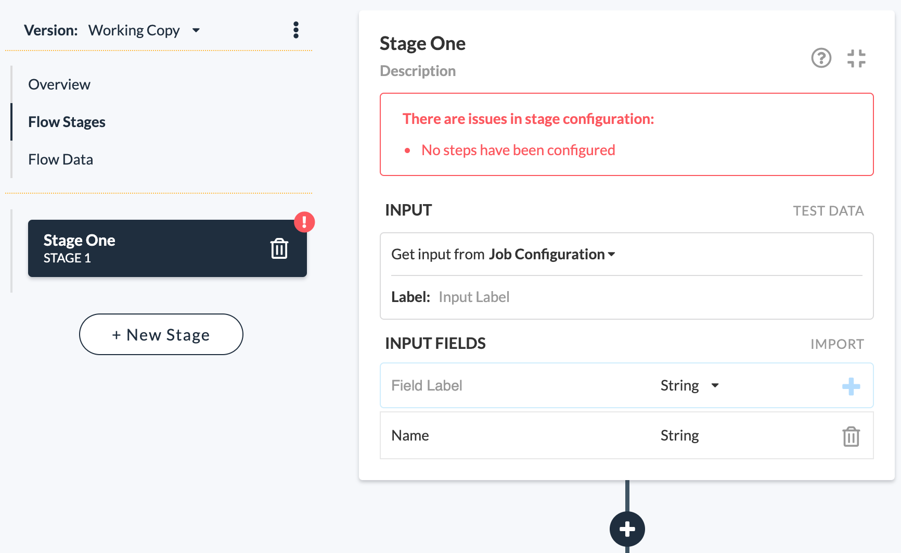

Configure a Stage
The stage editor allows the user to define the stage. The top section of a stage includes a Name and Description. Use name and description fields to document your stages. You can then proceed to:
- Define the required Input Data.
- Add a sequence of Steps to process the data.

See also: About Flow Stages, About Stage Steps